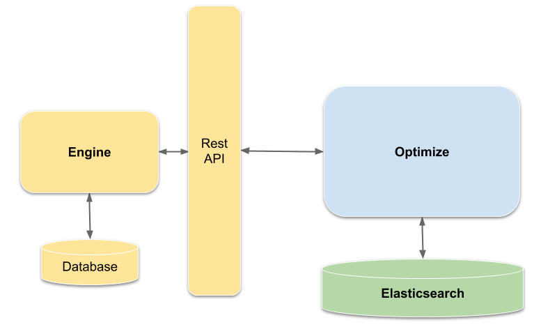
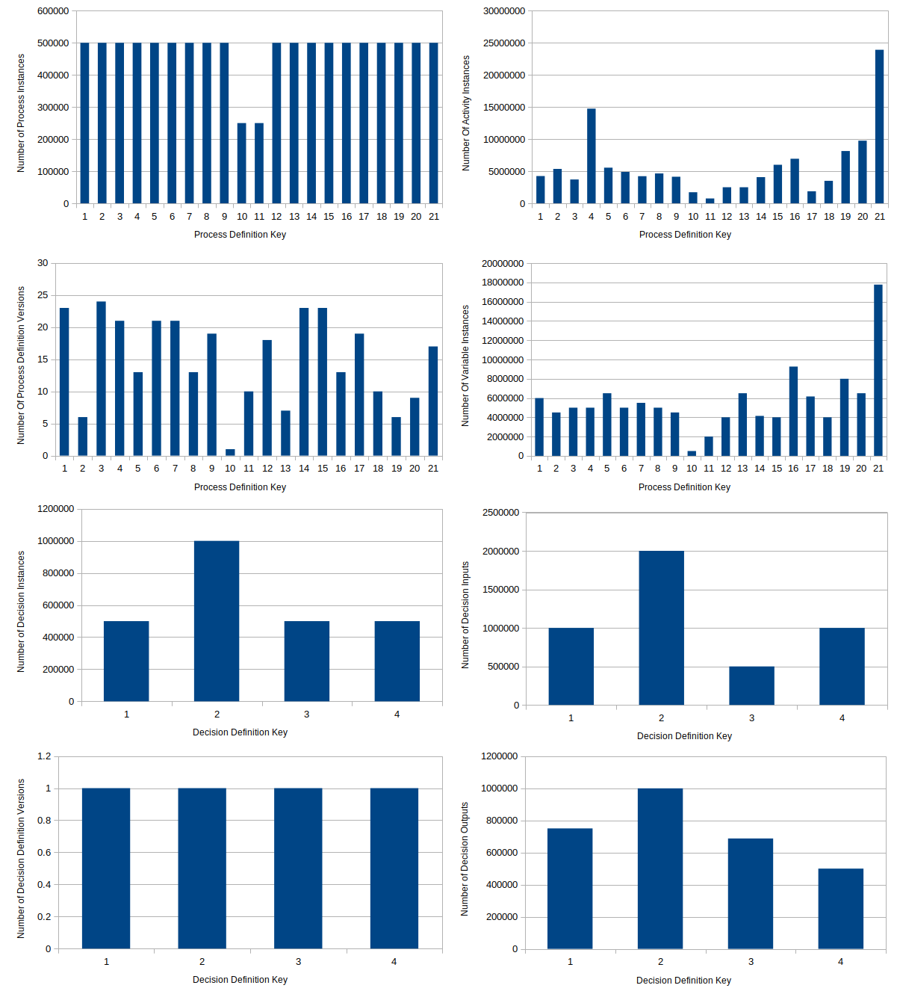
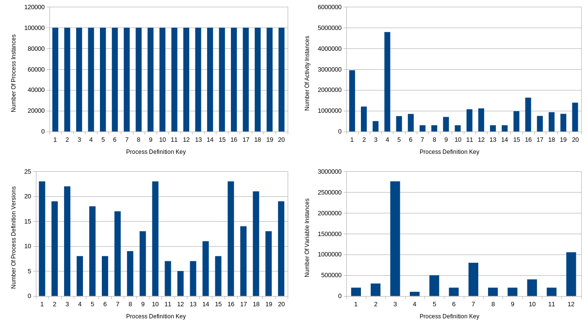
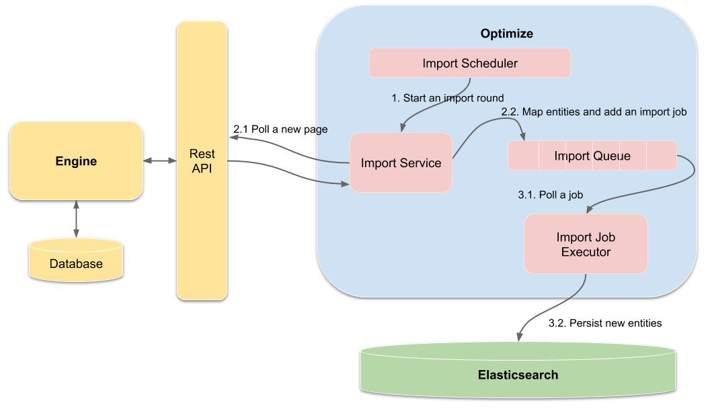
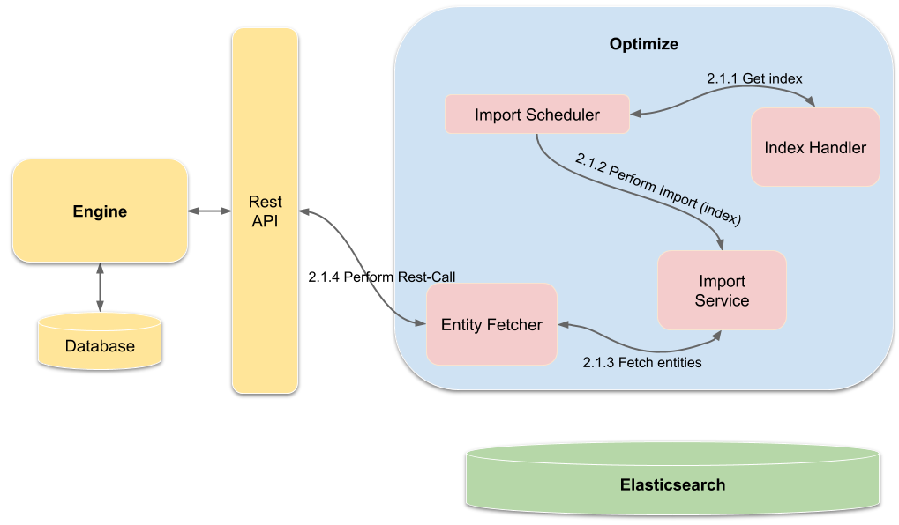

Data import
This document provides instructions on how the import of the engine data to Optimize works.
Architecture overview
In general, the import assumes the following setup:
- A Camunda engine from which Optimize imports the data.
- The Optimize backend, where the data is transformed into an appropriate format for efficient data analysis.
- Elasticsearch, which is the database Optimize persists all formatted data to.
The following depicts the setup and how the components communicate with each other:

Optimize queries the engine data using a dedicated Optimize REST-API within the engine, transforms the data, and stores it in its own Elasticsearch database such that it can be quickly and easily queried by Optimize when evaluating reports or performing analyses. The reason for having a dedicated REST endpoint for Optimize is performance: the default REST-API adds a lot of complexity to retrieve the data from the engine database, which can result in low performance for large data sets.
Note the following limitations regarding the data in Optimize's database:
- The data is only a near real-time representation of the engine database. This means Elasticsearch may not contain the data of the most recent time frame, e.g. the last two minutes, but all the previous data should be synchronized.
- Optimize only imports the data it needs for its analysis. The rest is omitted and won't be available for further investigation. Currently, Optimize imports:
- The history of the activity instances
- The history of the process instances
- The history of variables with the limitation that Optimize only imports primitive types and keeps only the latest version of the variable
- The history of user tasks belonging to process instances
- The history of incidents with the exception of incidents that occurred due to the history cleanup job or a timer start event job running out of retries
- Process definitions
- Process definition XMLs
- Decision definitions
- Definition deployment information
- Historic decision instances with input and output
- Tenants
- The historic identity link logs
Refer to the Import Procedure section for a more detailed description of how Optimize imports engine data.
Import performance overview
This section gives an overview of how fast Optimize imports certain data sets. The purpose of these estimates is to help you evaluate whether Optimize's import performance meets your demands.
It is very likely that these metrics change for different data sets because the speed of the import depends on how the data is distributed.
The import is also affected by how the involved components are set up. For instance, if you deploy the Camunda engine on a different machine than Optimize and Elasticsearch to provide both applications with more computation resources, the process is likely to speed up. If the Camunda engine and Optimize are physically far away from each other, the network latency might slow down the import.
Setup
The following components were used for these import tests:
| Component | Version |
|---|---|
| Camunda 7 | 7.10.3 |
| Camunda 7 Database | PostgreSQL 11.1 |
| Elasticsearch | 6.5.4 |
| Optimize | 2.4.0 |
The Optimize configuration with the default settings was used, as described in detail in the configuration overview.
The following hardware specifications were used for each dedicated host
- Elasticsearch:
- Processor: 8 vCPUs*
- Working Memory: 8 GB
- Storage: local 120GB SSD
- Camunda 7:
- Processor: 4 vCPUs*
- Working Memory: 4 GB
- Camunda 7 Database (PostgreSQL):
- Processor: 8 vCPUs*
- Working Memory: 2 GB
- Storage: local 480GB SSD
- Optimize:
- Processor: 4 vCPUs*
- Working Memory: 8 GB
*one vCPU equals one single hardware hyper-thread on an Intel Xeon E5 v2 CPU (Ivy Bridge) with a base frequency of 2.5 GHz.
The time was measured from the start of Optimize until the entire data import to Optimize was finished.
Large size data set
This data set contains the following amount of instances:
| Number of Process Definitions | Number of Activity Instances | Number of Process Instances | Number of Variable Instances | Number of Decision Definitions | Number of Decision Instances |
|---|---|---|---|---|---|
| 21 | 123 162 903 | 10 000 000 | 119 849 175 | 4 | 2 500 006 |
Here, you can see how the data is distributed over the different process definitions:

Results:
- Duration of importing the whole data set: ~120 minutes
- Speed of the import: ~1400 process instances per second during the import process
Medium size data set
This data set contains the following amount of instances:
| Number of Process Definitions | Number of Activity Instances | Number of Process Instances | Number of Variable Instances |
|---|---|---|---|
| 20 | 21 932 786 | 2 000 000 | 6 913 889 |
Here you can see how the data is distributed over the different process definitions:

Results:
- Duration of importing the whole data set: ~ 10 minutes
- Speed of the import: ~1500 process instances per second during the import process
Import procedure
Understanding the details of the import procedure is not necessary to make Optimize work. In addition, there is no guarantee that the following description is either complete or up-to-date.
The following image illustrates the components involved in the import process as well as basic interactions between them:

During execution, the following steps are performed:
- Start an import round.
- Prepare the import.
- Poll a new page
- Map entities and add an import job
- Execute the import.
- Poll a job
- Persist the new entities to Elasticsearch
Start an import round
The import process is automatically scheduled in rounds by the Import Scheduler after startup of Optimize. In each import round, multiple Import Services are scheduled to run, each fetches data of one specific entity type. For example, one service is responsible for importing the historic activity instances and another one for the process definitions.
For each service, it is checked if new data is available. Once all entities for one import service have been imported, the service starts to back off. To be more precise, before it can be scheduled again it stays idle for a certain period of time, controlled by the "backoff" interval and a "backoff" counter. After the idle time has passed, the service can perform another try to import new data. Each round in which no new data could be imported, the counter is incremented. Thus, the backoff counter will act as a multiplier for the backoff time and increase the idle time between two import rounds. This mechanism is configurable using the following properties:
handler:
backoff:
# Interval which is used for the backoff time calculation.
initial: 1000
# Once all pages are consumed, the import service component will
# start scheduling fetching tasks in increasing periods of time,
# controlled by 'backoff' counter.
# This property sets maximal backoff interval in seconds
max: 30
If you would like to rapidly update data imported into Optimize, you have to reduce this value. However, this will cause additional strain on the engine and might influence the performance of the engine if you set a low value.
More information about the import configuration can be found in the configuration section.
Prepare the import
The preparation of the import is executed by the ImportService. Every ImportService implementation performs several steps:
Poll a new page
The whole polling/preparation workflow of the engine data is done in pages, meaning only a limited amount of entities is fetched on each execution. For example, say the engine has 1000 historic activity instances and the page size is 100. As a consequence, the engine would be polled 10 times. This prevents running out of memory and overloading the network.
Polling a new page does not only consist of the ImportService, but the IndexHandler, and the EntityFetcher are also involved. The following image depicts how those components are connected with each other:

First, the ImportScheduler retrieves the newest index, which identifies the last imported page. This index is passed to the ImportService to order it to import a new page of data. With the index and the page size, the fetching of the engine data is delegated to the EntityFetcher.
Map entities and add an import job
All fetched entities are mapped to a representation that allows Optimize to query the data very quickly. Subsequently, an import job is created and added to the queue to persist the data in Elasticsearch.
Execute the import
Full aggregation of the data is performed by a dedicated ImportJobExecutor for each entity type, which waits for ImportJob instances to be added to the execution queue. As soon as a job is in the queue, the executor:
- Polls the job with the new Optimize entities
- Persists the new entities to Elasticsearch
The data from the engine and Optimize do not have a one-to-one relationship, i.e., one entity type in Optimize may consist of data aggregated from different data types of the engine. For example, the historic process instance is first mapped to an Optimize ProcessInstance. However, for the heatmap analysis it is also necessary for ProcessInstance to contain all activities that were executed in the process instance.
Therefore, the Optimize ProcessInstance is an aggregation of the engine's historic process instance and other related data: historic activity instance data, user task data, and variable data are all nested documents within Optimize's ProcessInstance representation.
Optimize uses nested documents, the above mentioned data is an example of documents that are nested within Optimize's ProcessInstance index.
Elasticsearch applies restrictions regarding how many objects can be nested within one document. If your data includes too many nested documents, you may experience import failures. To avoid this, you can temporarily increase the nested object limit in Optimize's index configuration. Note that this might cause memory errors.
Import executions per engine entity are actually independent from another. Each follows a producer-consumer-pattern, where the type specific ImportService is the single producer and a dedicated single ImportJobExecutor is the consumer of its import jobs, decoupled by a queue. So, both are executed in different threads. To adjust the processing speed of the executor, the queue size and the number of threads that process the import jobs can be configured:
import:
# Number of threads being used to process the import jobs per data type that are writing
# data to elasticsearch.
elasticsearchJobExecutorThreadCount: 1
# Adjust the queue size of the import jobs per data type that store data to elasticsearch.
# A too large value might cause memory problems.
elasticsearchJobExecutorQueueSize: 5